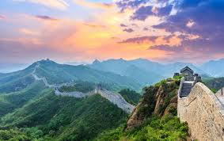
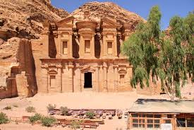
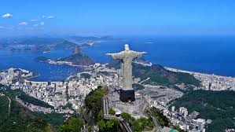
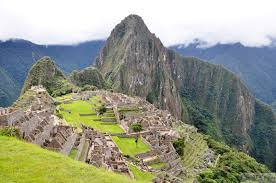
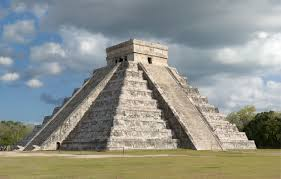
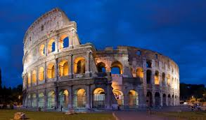
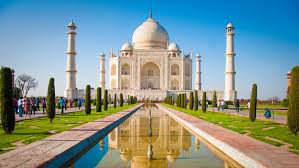

Wielki Mur Chinski

Wielki Mur Chiński (chiń. upr. 万里长城; chiń. trad. 萬里長城; pinyin: Wànlǐ Chángchéng) – zbiorcza nazwa systemów
obronnych składających się z zapór naturalnych, sieci fortów i wież obserwacyjnych oraz (w najbardziej
strategicznych miejscach) murów obronnych z ubitej ziemi, murowanych lub kamiennych, osłaniających północne
Chiny przed najazdami ludów z Wielkiego Stepu. Tradycyjnie przyjmuje się, że Wielki Mur rozciągał się od
Shanhaiguan (nad zatoką Liaodong) do Jiayuguan w górach Nan Shan na długości ok. 2400 km. Nazywany jest też
„Murem 10 000 Li” (10 000 nie powinno być tutaj traktowane dosłownie i oznacza raczej „nieskończoną długość”
muru).
W 1987 roku został wpisany na listę światowego dziedzictwa UNESCO, a 7 lipca 2007 ogłoszono go jednym z siedmiu
nowych cudów świata.
Doniesienia prasowe[1][2][3][4], według których łączna długość budowli ma wynosić 8851,8 km i składać się
odpowiednio z 6259,6 km – murów wzniesionych ludzką ręką, 2232,5 km – barier naturalnych, takie jak rzeki i
wzgórza i 359,7 km rowu, pochodzą najprawdopodobniej z doniesienia China Daily[5]. Należy je uznać za wyniki
pomiaru całego systemu fortyfikacji, a nie za pomiar długości „muru”, gdyż ten, w postaci jednolitej konstrukcji
nigdy nie istniał. Umocnienia w różnych epokach wznoszono w różnych miejscach, w zależności od bieżącej sytuacji
politycznej; warunki naturalne powodowały, że część z nich budowano w tych samych, kluczowych punktach (np. na
przełęczach górskich).
Petra w Jordanii

Petra (z gr. πέτρα, pétra, „skała”; arab. البتراء, al-Batrāʾ) – ruiny miasta Nabatejczyków, którego rozkwit
miał miejsce w czasach antycznych, III w. p.n.e. do I w. n.e. Petra była wtedy stolicą królestwa Nabatejczyków.
Znajduje się w południowo-zachodniej Jordanii. Położona jest w skalnej dolinie, do której prowadzi jedna wąska
droga wśród skał – wąwóz As-Sik. Petra słynie z licznych budowli wykutych w skałach. Sami Nabatejczycy zwali
Petrę Rqm (Rakmu), co oznacza „wielobarwna”.
Petra leży w południowo-zachodniej części obecnej Jordanii. Położona jest na terenie wyżynnym, półpustynnym,
wśród skał ciągnących się na odległość ok. 1,6 km ze wschodu na zachód i z północy na południe, będących
zachodnią częścią masywu Dżabal asz-Szara. Dolinę Petry przecina koryto rzeki okresowej – Wadi Musa, której
dopływy okalają płaskowyże, na których rozrosło się antyczne miasto Nabatejczyków. Okoliczne całoroczne
strumienie wody zapewniały przeżycie tylko niewielkiemu osiedlu. Znaczny przyrost mieszkańców w czasie
największego rozkwitu Petry spowodował, że Nabatejczycy musieli rozbudować system wodociągów i cystern skalnych,
by magazynować wodę dla wciąż rosnącej populacji.
.
Brazylijski posag Chrystusa Odkupiciela w Rio de Janeiro

Statua Chrystusa Zbawiciela[3] (port. Cristo Redentor = Chrystus Odkupiciel) – 38-metrowy[1][2] pomnik Jezusa
Chrystusa wzniesiony na szczycie granitowej góry Corcovado w Rio de Janeiro w Brazylii[4]. Statua jest jednym z
symboli Rio oraz imponującym i charakterystycznym obiektem w tym mieście.
W 1921 r. rozpoczęła się zbiórka pieniędzy na budowę pomnika, który miał upamiętnić setną rocznicę
niepodległości Brazylii. Rozważano kilka projektów, między innymi gigantyczny krzyż czy postać Boga z kulą
ziemską w dłoni. Ostatecznie wybrano pomysł Hektora da Silvy, którego olbrzymia statua Chrystusa z rozpostartymi
ramionami obejmującymi zarówno miasto jak i witająca przybywających gości od morza spodobała się najbardziej.
Pieniądze zebrano w kościołach całej Brazylii. Sam pomnik został zaprojektowany przez francuskiego rzeźbiarza
polskiego pochodzenia Paula Landowskiego.
Autorem głowy posagu jest rumuński rzeźbiarz Gheorghe Leonida. Odkryto to pod koniec XX wieku dzięki rozmowom z
rumuńskimi emigrantami w Brazylii, a potwierdził profesor Atico da Mota w pracy Brasilia e Romenia Pontes
Culturais. Informacje te potwierdzili również potomkowie siostry rzeźbiarza[5]
Rzeźbę zbudowano we Francji i przewieziono do Rio de Janeiro, a przed umieszczeniem na szczycie wzgórza obłożono
steatytem. Odsłonięcie nastąpiło 12 października 1931 r. Dokonał tego projektant oświetlenia pomnika Guglielmo
Marconi, który włączył je z jachtu przycumowanego w porcie we włoskiej Genui. Uroczystość tę powtarzano jeszcze
dwa razy. Za drugim razem gdy zainstalowano nowe oświetlenie, włączenia dokonał papież Paweł VI, a za trzecim z
okazji 50. rocznicy budowy 12 października 1981 uświetnił włączeniem papież Jan Paweł II. W 1980 roku, przed
pielgrzymką do Rio papieża Jana Pawła II, umyto figurę Chrystusa[6].
Zaginione miasto Inków Machu Picchu w Peru

>Machu Picchu (keczua Machu Pikchu, ‘stary szczyt’) – najlepiej zachowane miasto Inków, w odległości 112 km od
Cuzco. Położone jest na wysokości 2090–2400 m n.p.m., na przełęczy między Huayna Picchu a Machu Picchu w
peruwiańskich Andach. Poniżej płynie rzeka Urubamba.
Miasto zbudowano w II połowie XV wieku podczas panowania jednego z najwybitniejszych władców Pachacuti Inca
Yupanqui (1438–1471). Pełniło wówczas funkcję głównego centrum ceremonialnego, ale także gospodarczego i
obronnego. Zamieszkiwali je kapłani, przedstawiciele inkaskiej arystokracji, żołnierze oraz opiekunowie
tamtejszych świątyń. Miasto składało się z dwóch części. W górnej, zwanej hanman, znajdowały się: świątynia
słońca, grobowiec królewski, pałac królewski oraz Intihuatana, największa inkaska świętość. W dolnej mieściły
się domy mieszkalne kryte strzechą oraz warsztaty produkcyjne. Na stromych zboczach otaczających miasto były
tarasy uprawne o szerokości od 2 do 4 m, z pionowymi ścianami między nimi wzniesionymi z kamieni[1].
Miasto opuszczono ok. 1537 roku. Współczesna nazwa miasta jest połączeniem machu (stary) w języku keczua i
zapożyczonego z hiszpańskiego słowa pico (‘szczyt’). Oryginalnie miasto nazywało się Patallaqta, od keczuańskich
słów pata (‘stopień, schodek’) i llaqta (‘miasto’)[2].
Meksykanska piramida Chichén Itzá

Chichén Itzá – prekolumbijskie miasto założone przez Majów na półwyspie Jukatan (Meksyk) w IV – VI w. Zachowane
zabytki w jego częściach południowej i zachodniej są związane z wcześniejszą kulturą Majów, natomiast w części
północnej – z późniejszą kulturą Tolteków.
W okresie między 600 a 400 r. p.n.e. w Komchen, niedaleko Chichén Itzá powstały pierwsze na ziemiach Majów
złożone budowle na kamiennych platformach
Największy rozwój datowany jest na X – XI wiek. W wieku XIII miasto straciło na znaczeniu, a w XV zostało
opuszczone. Od 1924 roku prowadzone wykopaliska pozwoliły odkryć pozostałości wielu zabytków. Nazwa miasta
pochodzi od dwóch świętych zbiorników, przy których zostało ono założone (nazwa Chichén Itzá znaczy Źródła Ludu
Itzá lub Wrota do studni Itzá[2]). Zbiorniki te zwane cenote służyły od V wieku jako miejsce składania ofiar[3]
– Majowie wrzucali rytualnie łamane przedmioty.
Rzymskie Koloseum

Koloseum (łac. Colosseum, wł. Colosseo), właściwie amfiteatr Flawiuszów[1] (łac. Amphitheatrum Flavium) –
amfiteatr w Rzymie, wzniesiony w latach 70-72 do 80 n.e. przez Wespazjana i Tytusa – cesarzy z dynastii
Flawiuszów
Jest to duża, eliptyczna budowla o długości 188 m i szerokości 156 m, obwodzie 524 m, wysokości 48,5 m, z
pojemną widownią, która mogła pomieścić od 45 do 50 tysięcy widzów[2]; z galeriami komunikacyjnymi oraz areną z
systemem podziemnych korytarzy. W czterokondygnacyjnym podziale zewnętrznym zastosowano spiętrzenie porządków
(najniższa kondygnacja w porządku toskańskim, druga w jońskim, trzecia w korynckim). Trzy niższe kondygnacje
związane są z konstrukcyjnym układem arkad, czwarta, najwyższa została zaopatrzona tylko w małe okna. Od strony
wewnętrznej budowla jest pięciokondygnacyjna. Cztery kondygnacje zbudowano jako układ pomieszczeń wydzielonych
pomiędzy filarami, ścianami, ze sklepieniami kolebkowymi i krzyżowymi. Umieszczono tam bufety, szatnie,
natryski, pomieszczenia dla gladiatorów, klatki dla zwierząt, korytarze. Wokół areny wzniesione było podium. Do
Koloseum prowadziło 80 ponumerowanych wejść (zachowały się oznaczenia wejść od nr XXIII do LIV), które
zapewniały szybkie (przez ok. 6 minut) opuszczenie widowni przez widzów (jednak taką możliwość mieli tylko
widzowie z dolnych i środkowych rzędów). Istniała też możliwość przykrycia całej widowni specjalną osłoną
(velarium) w deszczowe lub bardzo słoneczne dni.
Odbywały się w nim m.in. walki gladiatorów, naumachie, polowania na dzikie zwierzęta. Tradycja mówi, iż w
Koloseum mordowano chrześcijan, co upamiętniono krzyżem wewnątrz budowli. Od połowy XVIII wieku Koloseum jest
otoczone opieką jako miejsce męczeństwa pierwszych chrześcijan, wcześniej pozyskiwano z niego bloki kamienne
jako materiał budowlany. Nazwa Koloseum została nadana we wczesnym średniowieczu od znajdującego się w pobliżu
budowli ogromnego (gr. „kolossos”) posągu Nerona przedstawionego jako Helios.
W 445 zostało poważnie uszkodzone przez trzęsienie ziemi.
W 528 odbyły się tu ostatnie igrzyska.
Pod koniec VI wieku wewnątrz amfiteatru wybudowano mały kościół, arenę przekształcono w cmentarz.
Około 1200 rodzina Frangipani przejęła Koloseum i ufortyfikowała je, używając jako zamku.
W 1349 w wyniku trzęsienia ziemi zawaliła się zewnętrzna część południowej ściany.
W 1744 zostało ogłoszone miejscem męczeństwa chrześcijan. Zaprzestano eksploatować go w roli kamieniołomu.
Od II poł. XVIII wieku w Wielki Piątek odbywa się tutaj droga krzyżowa pod przewodnictwem papieża.
7 lipca 2007 obiekt został ogłoszony jednym z siedmiu nowych cudów świata.
Mauzoleum Tadz Mahal w Indiach.

Tadź Mahal[a] (hindi: ताज महल urdu: تاج محل) – indyjskie mauzoleum wzniesione przez Szahdżahana z dynastii
Wielkich Mogołów, na pamiątkę przedwcześnie zmarłej, ukochanej żony Mumtaz Mahal. Obiekt bywa nazywany świątynią
miłości[kto?].
Tadź Mahal został wzniesiony w Agrze, mieście nad rzeką Jamuna, w indyjskim stanie Uttar Pradesh. Agra leży w
odległości około 200 kilometrów od Delhi – dawnej stolicy Indii. Jest to jeden z głównych punktów wielu
wycieczek zagranicznych.
Kompleks budowlany Tadź Mahal składa się z głównego mauzoleum z wielką kopułą, w kształcie cebuli,
charakterystyczną dla sztuki islamu, i olbrzymią bramą, symbolizującą wrota do Raju. Jest ona osadzona na
plincie, w której rogach stoją cztery minarety – wieże, z których muezin nawołuje wiernych do modlitwy. Po
bokach stoją dwa identyczne meczety z czerwonego kamienia. Uzupełnieniem kompleksu są standardowe elementy tego
typu budowli: kanały wodne oraz podzielony na cztery części ogród krajobrazowy. Konstrukcja ogrodu perskiego
przed mauzoleum imituje muzułmańskie wyobrażenie raju, które cechuje duże podobieństwo do jego chrześcijańskiego
odpowiednika[1].